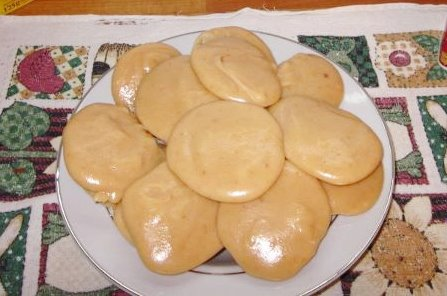

Postres de Locura - Recetas de postres deliciosos y fáciles

Postres de Locura
Recetas de postres deliciosos y fáciles de preparar.
Inicio Nuestras recetas Bizcochos y Tartas Postres sin horno Helados Galletas y Muffins Otros dulces Postres Rápidos Acerca de mí Contacto ÍNDICE ALFABÉTICO DE RECETASElige tu receta y ponte manos a la obra
BIZCOCHO DE AVENA CON FRUTA DE TEMPORADA. RECETA SIN GLUTEN
Este bizcocho de avena con fruta de temporada, además de estar delicioso tiene un montón de … Leer más
TARTA CON CREMA DE FRESAS
Esta preciosa tarta con crema de fresas, es ideal para cualquier celebración o para sorprender a … Leer más
PAN SEMI INTEGRAL CON AVENA Y MIEL
Comer pan es uno de esos pequeños placeres que todos disfrutamos y si lo preparamos en casa, con … Leer más
BIZCOCHO DE YOGUR Y CHOCOLATE
Este bizcocho de yogur y chocolate, es una de esas recetas sencillas de preparar y con un resultado … Leer más
PASTEL DE ARROZ
El pastel de arroz es un dulce clásico de la ciudad de Bilbao. Está elaborado con una capa exterior … Leer más
GALLETAS VEGANAS DE AVENA, ALMENDRA Y CHÍA sin gluten
Estas galletas veganas de avena, almendra y chía sin gluten, además de estar buenísimas, no llevan … Leer más
Postres publicados recientemente
BIZCOCHO DE AVENA CON FRUTA DE TEMPORADA. RECETA SIN GLUTEN
Este bizcocho de avena con fruta de temporada, además de estar delicioso tiene un montón de ventajas. Puedes elaborarlo con tu fruta favorita, yo he usado albaricoques, pero queda fantástico con … Leer más
TARTA CON CREMA DE FRESAS
Esta preciosa tarta con crema de fresas, es ideal para cualquier celebración o para sorprender a alguien especial. Está formada por dos capas de bizcocho rellenas con una deliciosa crema de fresas, … Leer más
PAN SEMI INTEGRAL CON AVENA Y MIEL
Comer pan es uno de esos pequeños placeres que todos disfrutamos y si lo preparamos en casa, con ingredientes de calidad, como este pan semi integral con avena y miel, la satisfacción es aún … Leer más
BIZCOCHO DE YOGUR Y CHOCOLATE
Este bizcocho de yogur y chocolate, es una de esas recetas sencillas de preparar y con un resultado delicioso, que no pueden faltar en nuestro recetario. Además te explico, cómo hacerlo a la manera … Leer más
PASTEL DE ARROZ
El pastel de arroz es un dulce clásico de la ciudad de Bilbao. Está elaborado con una capa exterior de hojaldre y un relleno delicioso que tiene una textura situada entre el flan y la tarta de queso y … Leer más
GALLETAS VEGANAS DE AVENA, ALMENDRA Y CHÍA sin gluten
Estas galletas veganas de avena, almendra y chía sin gluten, además de estar buenísimas, no llevan ningún ingrediente de origen animal y son aptas para personas con intolerancia a los lácteos o al … Leer más
PAN DE LECHE JAPONÉS, EL PAN DE LECHE MÁS ESPONJOSO
Me encanta hacer pan en casa y uno de mis favoritos es este pan de leche japonés, el pan de leche más esponjoso que he probado. Su textura es sorprendente, tiene una miga muy esponjosa y un delicioso … Leer más
BIZCOCHO DE NARANJA Y YOGUR SÚPER ESPONJOSO
Este bizcocho de naranja y yogur súper esponjoso, es una de esas recetas que en cuanto las pruebas, pasan a formar parte de tu recetario habitual. Ideal para aprovechar la temporada de … Leer más
TARTA DE TURRÓN BLANDO Y CARAMELO SALADO sin horno
El turrón blando que suele proliferar en la época navideña, es ideal para preparar una amplia variedad de postres y hoy me he decidido por esta tarta de turrón blando y caramelo salado sin … Leer más
MANTECADOS DE ACEITE DE OLIVA Y NARANJA
Ya está aquí la Navidad y para endulzar estos días tan especiales, he preparado unos deliciosos mantecados de aceite de oliva y naranja. Los mantecados son unos de los dulces más tradicionales … Leer más
TARTA FRANCESA DE MANZANA
Si te gustan los postres con manzana, esta tarta francesa de manzana se va a convertir en una de tus favoritas. Esta es una receta con una gran cantidad de fruta, ya que los trozos de manzana … Leer más
TARTA DE CHOCOLATE Y MERENGUE
Esta tarta de chocolate y merengue es una receta para hacer felices a todos los amantes del chocolate, tanto si eres un ferviente entusiasta del chocolate o si te gusta, pero no demasiado … Leer más
CHEESECAKE DE CALABAZA SIN HORNO
El otoño es temporada de calabaza y aunque es un ingrediente que muchas personas apenas están empezando a probar en recetas de repostería, el resultado siempre es delicioso y para que lo compruebes, … Leer más
TARTA DE CUMPLEAÑOS CON MELOCOTÓN Y FRAMBUESAS
Hace unos días fue el cumpleaños de mi hijo y para celebrarlo preparé esta tarta de cumpleaños con melocotón y frambuesas, ya que la ocasión merecía una receta especial. La tarta está formada … Leer más
BIZCOCHO DE YOGUR, LIMÓN Y LAVANDA
Este bizcocho de yogur, limón y lavanda, es una receta original y deliciosa, que sin duda te sorprenderá. La diferencia con otros bizcochos la pone la lavanda, que lo perfuma y le da unos matices … Leer más
POLOS DE LECHE MERENGADA
La leche merengada es una bebida típica de España, que seguramente todos hemos probado alguna vez y para recordarla, he preparado estos polos de leche merengada, ideales para estos días de … Leer más
Las manos detrás de los postres
Hola, soy Ángela, me encanta cocinar, comer, viajar, la naturaleza y la fotografía.
Soy las manos detrás de los postres, las fotos y las dulces ideas de Postres de Locura. !Bienvenidos a mi blog!
Escoge la receta que más te guste y ponte manos a la obra. Saber más
Encuentra la receta que buscas
Sígueme en mis redes sociales:
Mis recetas en vídeo
https://www.youtube.com/watch?v=v61pUWWKcocPostres destacados
MOUSSE DE FRESAS Y YOGUR
TARTA CON FRESAS Y CHOCOLATE PARA SAN VALENTÍN
TARTA DE QUESO AL HORNO FACIL
GALLETAS VEGANAS DE AVENA, ALMENDRA Y CHÍA sin gluten
Mis fotos en Instagram:
angela_postresdelocura
Coca de San Juan para endulzar esta noche y celebr
Si buscas una buena razón para encender el horno
Aquí está el corte de la tarta con crema de fres
Nueva receta, perfecta para una celebración espec
¿Has probado el bizcocho de agua? Esta es mi vers
Si te gusta hacer pan en casa, la nueva receta del
Tenemos un par de días de sol por delante y el do
Aquí está el corte del bizcocho de yogur y choco
Cargar más
Síguenos en Instagram
Estos son los ingredientes más usados en nuestras recetas:
aceite de oliva almendras arequipe avena bizcocho canela cerezas cheesecake chocolate coco crema pastelera Dulce de leche frambuesas fresas galletas gelatina harina helado hojaldre huevos leche leche condensada limón mantequilla manzana melocotón mousse naranja nata Navidad nueces plátano Postres con chocolate Postres para celebrar postres para Navidad postres sin horno queso crema queso mascarpone queso philadelphia Recetas sanas uvas pasas Vainilla yogur yogur griego zanahoriaContacto
Gracias por visitar mi blog, tus comentarios son muy importantes para mí!
Si tienes algo que contarme o crees que puedo ayudarte en algo ¡No lo dudes! Escríbeme, será un placer leerte.
Escríbeme ahora!
Aviso legal.
El texto y las imágenes que aparecen en este blog, pertenecen a Postresdelocura.com y a su autora y no pueden ser utilizadas sin previa autorización Aviso legal y condiciones de uso de la web
Postres recientes
BIZCOCHO DE AVENA CON FRUTA DE TEMPORADA. RECETA SIN GLUTEN TARTA CON CREMA DE FRESAS PAN SEMI INTEGRAL CON AVENA Y MIEL BIZCOCHO DE YOGUR Y CHOCOLATE PASTEL DE ARROZEncuentra la receta que buscas
Copyright © 2021 postresdelocura.com · Todos los derechos reservados| Política de Privacidad | Aviso Legal | Política de Cookies
Esta web utiliza cookies de Google para prestar sus servicios y analizar su tráfico. Tu dirección IP y user-agent se comparten con Google, junto con las métricas de rendimiento y de seguridad para garantizar la calidad del servicio, generar estadísticas de uso y detectar y solucionar abusos. Entendido Reject Más información Política de Cookies CerrarPrivacy Overview
This website uses cookies to improve your experience while you navigate through the website. Out of these, the cookies that are categorized as necessary are stored on your browser as they are essential for the working of basic functionalities of the website. We also use third-party cookies that help us analyze and understand how you use this website. These cookies will be stored in your browser only with your consent. You also have the option to opt-out of these cookies. But opting out of some of these cookies may affect your browsing experience. Necessary Necessary Siempre activadoNecessary cookies are absolutely essential for the website to function properly. This category only includes cookies that ensures basic functionalities and security features of the website. These cookies do not store any personal information.
Non-necessary Non-necessaryAny cookies that may not be particularly necessary for the website to function and is used specifically to collect user personal data via analytics, ads, other embedded contents are termed as non-necessary cookies. It is mandatory to procure user consent prior to running these cookies on your website.
GUARDAR Y ACEPTAR